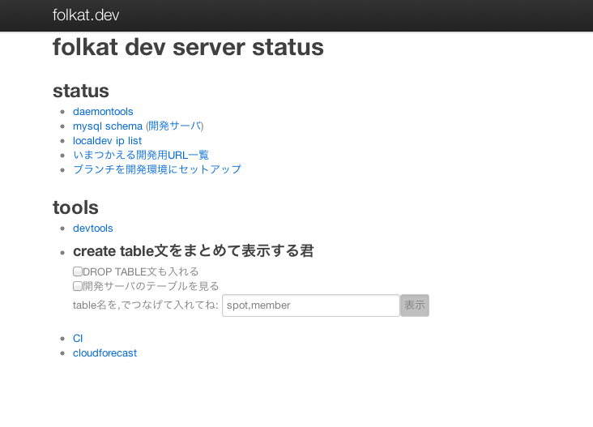

操作方法
- l キー: 次のページへ
- h キー: 前のページへ
- j キー: 目次ページへ
- k キー: 目次ページから戻る
- 目次ページでは j k キーで一覧を移動し、クリックで選択します
folkatdevs2
Yappo: yappo あっと shibuya.pl
kimoto Perl Mongers
今日は YAPC の LT で話せなかった事をやります
〜第一章〜 Twitter Streaming API with GrowthForecast
今時のまともなWeb系起業はみんな GrowthForecast を使っていると思います
僕のチームでも、ユーザ数やメタデータ数やコメント数裸威紅数、そのほか色々なデータ並びに手裏剣の販売数などもグラフに取っています。
社内の情報をグラフに取るだけだと、関わってるプロジェクト界隈の全体的な兆候まで見れなくて井の中の蛇蛙になってしまいますよね。。
最近は競合のデータと自社データを、同じ条件で観測してグラフ化して全体的な傾向を取るような事もやっています。
Twitter Streaming API を用いて、特定のつぶやきで且つ特定のアプリケーションから呟かれた数を集計する。
だいたいソースコード

まぁ、 AnySan 使う必要ないから AnyEvent::Twitter::Stream だけ使ってるけど
これを見てわかる事は、自社サービスの使われ方の傾向と他社サービスとの違いがあるのかどうかというのを客観的に知る事ができます。
この場合は集計データを一度全部 mysql に溜めてから、他の自社データのグラフと同じツールで一気にグラフ化してます。
YAPC は LT なのに40分用の内容で挑んでだいぶ端折ったので捗るまわりを小出しに
こういうステージング環境ツールを作ってます

grader tools
- grader-create branch, grader-remove branch
- コマンド一発で、ミドルウェアの設定と必要なサーバプロセスの立ち上げ/削除が行える
- ブランチ毎のステージング環境の管理が簡素化
create/remove したときは ikachan に飛ばしてる
staging status server
- ステージングサーバの各種詳細状態をブラウザで見れるように
- 現在動いてるplack list、ブランチリスト
- crontab でステータスを取って、静的ファイル配信
非エンジニア向け改修
- ブラウザでステージングサーバのファイルを git pull して svc -t するページ
- ブラウザで grader-create してくれるページ
- デザイン変更等は、エンジニアが関わらない事もあるので、非エンジニあに優しくしておく
local 2 staging
- local環境の ip address を定期的に status server に報告する
- 誰がどの ip address になるか解ってるので、トラブルになった時にすぐ助けられる
- 一括で開発用ファームウェアをアップグレードするときにも使える
staging create/update/remove
- vmのシェル環境から staging create とやると status サーバの API を叩いて、ステージング環境を作る
- 非エンジニア向けの機能を使ってエンジニアに優しい環境をつくる
- わざわざ ssh する必要がなくなるので便利
create/remove したときは ikachan に飛ばすように grader script が作られてるので、エンジニアも常に把握していられるし、わざわざ作業報告する必要がなくて面倒さが無い
sql schema pages
- crontab で定期的に、 SHOW CREATE TABLE して、スキーマをブラウザで見れるようにする
- table 毎に md5 して、更新の合ったテーブルの検出をしやすくする
- 最初はおもに、誰かがテーブル追加した時に参考するだけのページでした
create_table.pl
- vmの開発環境とステージングの schema が一致しなくなる時がある
- status サーバを見れば最新の定義がわかるので、それをダウンロードして反映
- alter table とかも自動でやってカラム位置も after で
diag.pl
- 開発用のイメージは、エンジニア意外も作業するので、 git やらサーバ落ちてるトラブルがたまにある
- 診断ツールを入れてある
- コマンドを叩くと、プロセス一覧、git cloneしたディレクトリの状態等々をまとめたリポートファイルを作成
- 作ったファイルは、最初に出た nopaste script でアップロードして、 url を ikachan に
以上です。何か質問がございましたら、社内IRCもしくは後夜祭などでお願いします。あ、あと